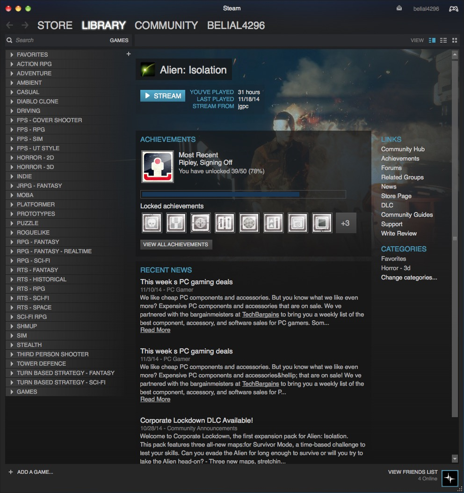
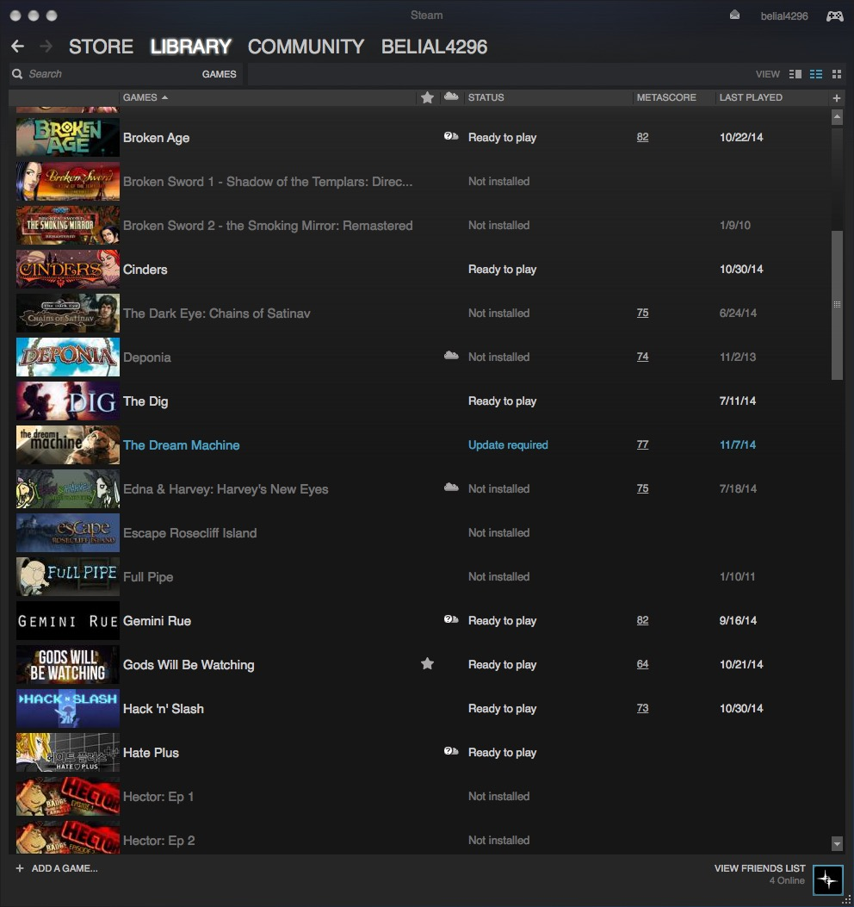
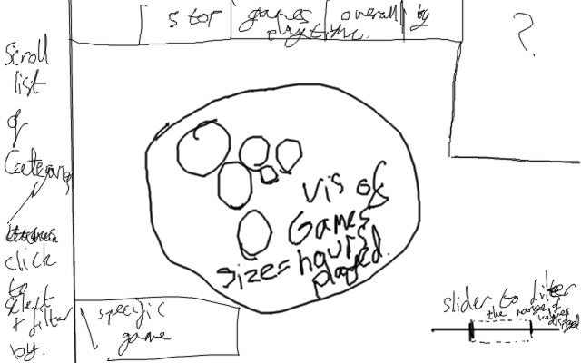
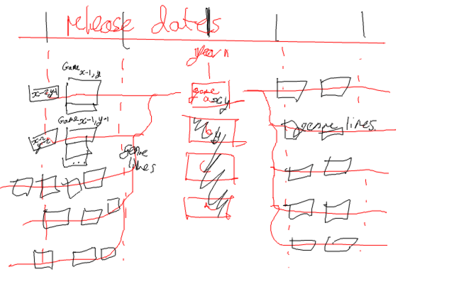

Purpose
As personal digital collections grow, it becomes necessary to display and browse the data in various new ways. My own steam library serves as an example. I have over 600 games, organised manually into genres. I spend more time going through the list of games to remember what I have than I do actually playing games quite often.
There are currently very few existing supplements to Steam's browsing capabilities, with
Depressurizer being the most notable. One problem that faces developers in supplementing Steam is that the steam web api is fairly useless.


Design Sketches

This provides a basic idea of providing a more overall view of games in a steam library. The current realisation of this design can be found
here

This shows the design for a timeline of games, to enable tracking of appearances of tags across time by release date. Such that, by clicking on a first person shooter, you can scroll through the games that you own that came before or after.
Other concepts still to design include playlists of games, exploration through screenshots, comparison of achievement tags, filtering by games friends own, and ordering multiplayer games by the number of worldwide players in said games.